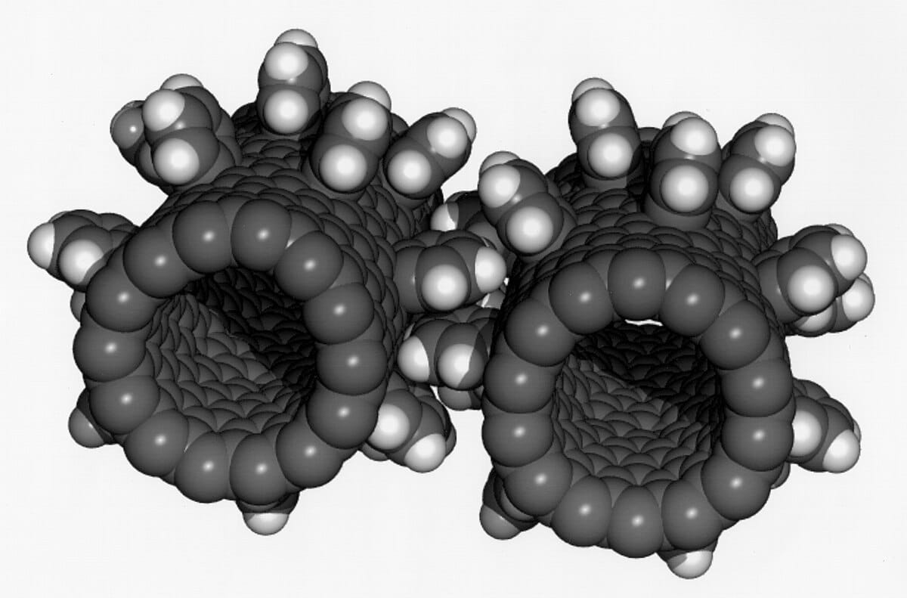
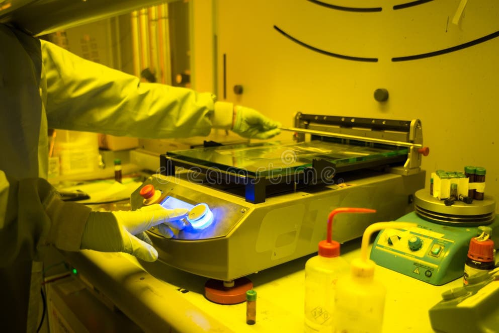

Key Nanotechnology Concepts in Vaccine Delivery
Nanotechnology plays a crucial role in modern vaccine delivery. Key concepts include:
- Nanocarriers: These are tiny vehicles that transport vaccines directly to target cells.
- Lipid Nanoparticles: Used in mRNA vaccines, these protect and deliver genetic material safely.
- Dendrimers: Branch-like structures that enhance drug solubility and efficiency.

